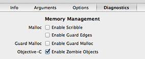

How do I set up NSZombieEnabled in Xcode 4?
How do I set up NSZombieEnabled and CFZombieLevel for my executable in
Xcode 4?
Answer
In Xcode 4.x press
⌥``⌘``R
(or click Menubar > Product > Scheme > Edit Scheme)
select the "Diagnostics" tab and click "Enable Zombie Objects":

This turns released objects into NSZombie instances that print console warnings when used again. This is a debugging aid that increases memory use (no object is really released) but improves error reporting.
A typical case is when you over-release an object and you don't know which one:
- With zombies:
-[UITableView release]: message sent to deallocated instance - Without zombies:

This Xcode setting is ignored when you archive the application for App Store submission. You don't need to touch anything before releasing your application.
Pressing ⌥``⌘``R is the same as selecting Product > Run while keeping the
Alt key pressed.
Clicking the "Enable Zombie Objects" checkbox is the same as manually adding
"NSZombieEnabled = YES" in the section "Environment Variables" of the tab
Arguments.
Suggest
Jano's answer is the easiest way to find it.. another way would be if you click on the scheme drop down bar -> edit scheme -> arguments tab and then add NSZombieEnabled in the Environment Variables column and YES in the value column...